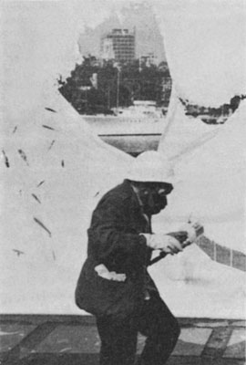
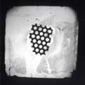
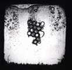
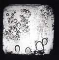

dissolve

gustav metzger painting with hydrochloric
acid on nylon. south bank, london, 1961/1966.


mark boyle & joan hills:
zinc dissolved by acid
(projection). from:
son et lumière for earth,
air, fire and water, 1966.
Gustav Metzger: Auto-Destructive Art (1959)
Auto-destructive art is primarily a form of public art for industrial societies.
Self-destructive painting, sculpture and construction is a total unity of idea, site, form, colour, method, and timing of the disintegrative process.
Auto-destructive art can be created with natural forces, traditional art techniques and technological techniques.
The amplified sound of the auto-destructive process can be an element of the total conception.
The artist may collaborate with scientists, engineers.
Self-destructive art can be machine produced and factory assembled.
Auto-destructive paintings, sculptures and constructions have a life time varying from a few moments to twenty years. When the disintegrative process is complete the work is to be removed from the site and scrapped.
Gustav Metzger: Manifesto Auto-Destructive Art (1960)
Man In Regent Street is auto-destructive.
Rockets, nuclear weapons, are auto-destructive.
Auto-destructive art.
The drop drop dropping of HH bombs.
Not interested in ruins, (the picturesque)
Auto-destructive art re-enacts the obsession with destruction, the pummeling to which individuals and masses are subjected.
Auto-destructive art demonstrates man's power to accelerate disintegrative processes of nature and to order them.
Auto-destructive art mirrors the compulsive perfectionism of arms manufacture - polishing to destruction point.
Auto-destructive art is the transformation of technology into public art. The immense productive capacity, the chaos of capitalism and of Soviet communism, the co-existence of surplus and starvation; the increasing stock-piling of nuclear weapons - more than enough to destroy technological societies; the disintegrative effect of machinery and of life in vast built-up areas on the person,...
Auto-destructive art is art which contains within itself an agent which automatically leads to its destruction within a period of time not to exceed twenty years. Other forms of auto-destructive art involve manual manipulation. There are forms of auto-destructive art where the artist has a tight control over the nature and timing of the disintegrative process, and there are other forms where the artist's control is slight.
Materials and techniques used in creating auto-destructive art include: Acid, Adhesives, Ballistics, Canvas, Clay, Combustion, Compression, Concrete, Corrosion, Cybernetics, Drop, Elasticity, Electricity, Electrolysis, Feed-Back, Glass, Heat, Human Energy, Ice, Jet, Light, Load, Mass-production, Metal, Motion Picture, Natural Forces, Nuclear Energy, Paint, Paper, Photography, Plaster, Plastics, Pressure, Radiation, Sand, Solar Energy, Sound, Steam, Stress, Terra-cotta, Vibration, Water, Welding, Wire, Wood.
Gustav Metzger: Auto-Destructive Art Machine Art Auto-Creative Art (1961)
Each visible fact absolutely expresses its reality.
Certain machine produced forms are the most perfect forms of our period.
In the evenings some of the finest works of art produced now are dumped on the streets of Soho.
Auto creative art is art of change, growth movement.
Auto-destructive art and auto creative art aim at the integration of art with the advances of science and technology. The immediate objective is the creation, with the aid of computers, of works of art whose movements are programmed and include "self-regulation". The spectator, by means of electronic devices can have a direct bearing on the action of these works.
Auto-destructive art is an attack on capitalist values and the drive to nuclear annihilation.